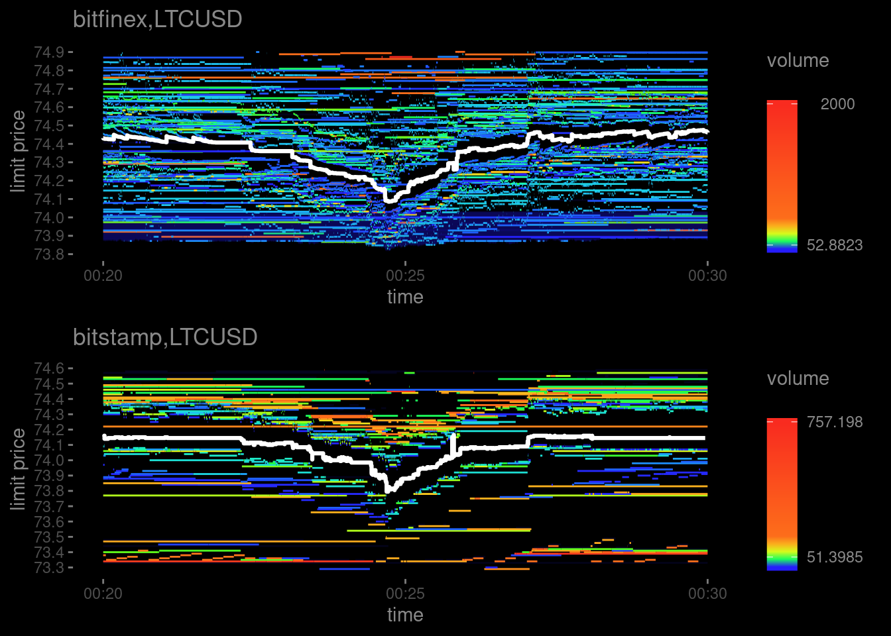
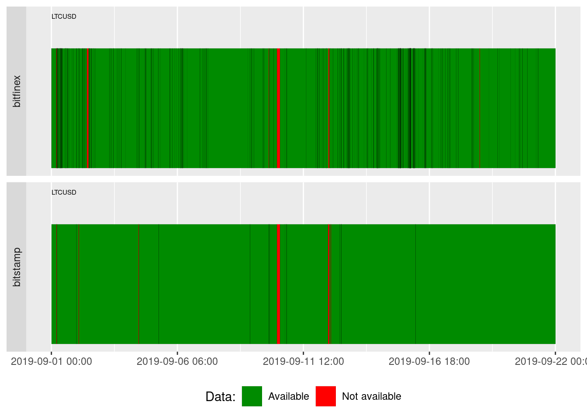
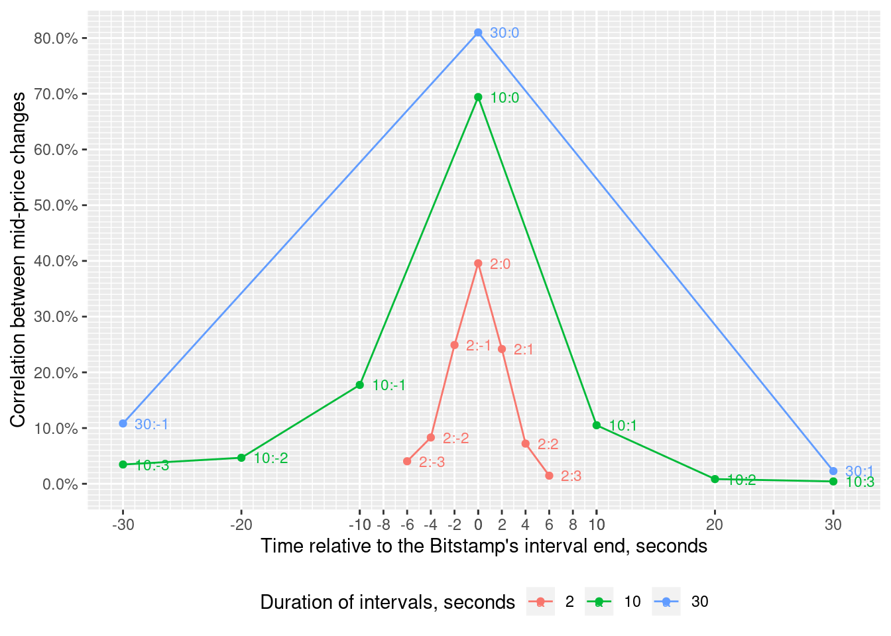
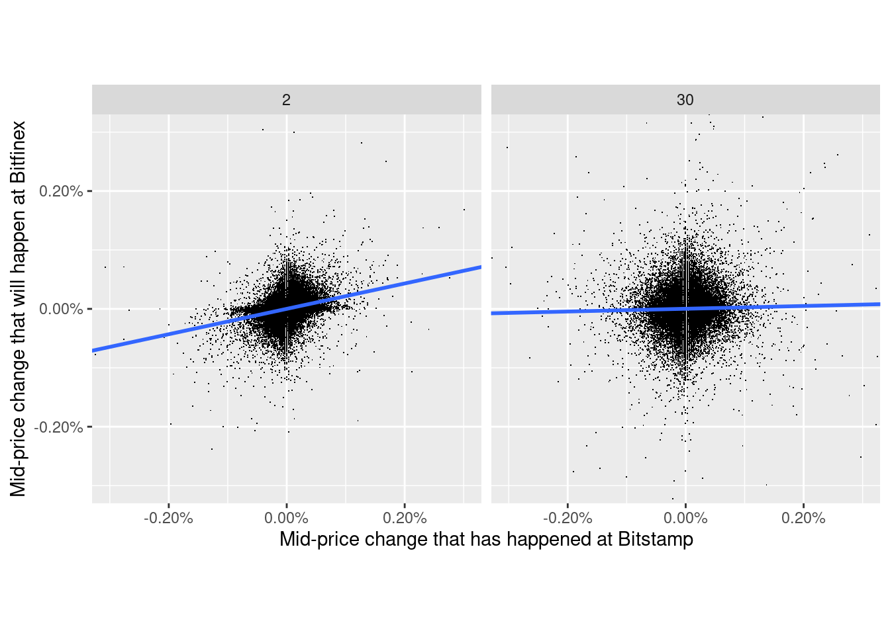

On the figure below the white line shows how the mid-price of LTCUSD pair changes at Bitfinex and Bitstamp between 2019-09-21 00:20:00+03 and 2019-09-21 00:30:00+03. The changes look similar but they are not completely the same. One could ask: is it possible to use the mid-price change that has just happened at one of the exchanges to predict the change that will hapen at the other? Let’s try to answer this question.

We will sample LTCUSD mid-price at regular intervals (2, 10 and 30 seconds) at Bitstamp and Bitfinex from 2019-09-01 00:00:00+03 till 2019-09-22 00:00:00+03. Then we’ll calculate mid-price change during each interval. Finally we’ll estimate Pearson correlation between mid-price change at Bitstamp and at Bitfinex using intervals of the same length but shifted relative to each other in time. We’ll also look at the size of mid-price changes.
We start from creating a tibble whith definitions of two instruments we will compare. It will be used to call functions from obadiah package that are vectorized over instruments:
instruments <- tribble(~exchange, ~pair,
'bitfinex', 'LTCUSD',
'bitstamp', 'LTCUSD')The first such function allows us to check whether we have required data in the database:
obadiah::plotDataAvailability(
with(instruments, obadiah::intervals(con, '2019-09-01 00:00:00+03', '2019-09-22 00:00:00+03', exchange, pair, tz='Europe/Moscow'))
)
Almost everything is green, so we may start the analysis.
obadiah::spread() will load from the database the spread the the end of the interval specified by.interval parameter. The function is vectorized over exchange and pair parameters so we utilize our instruments here. We will analyse several intervals held in intervals vector:
intervals <- c( 2, 10, 30) # seconds
mid.price.changes <- purrr::map_dfr(intervals,
function(d) {
with(instruments,
obadiah::spread(con,
'2019-09-01 00:00:00+03',
'2019-09-22 00:00:00+03',
exchange=exchange,
pair=pair,
frequency=d,
tz='Europe/Moscow')) %>%
group_by(exchange, pair) %>%
mutate(mid.price.change=log10(best.bid.price+best.ask.price) -
log10(lag(best.bid.price)+lag(best.ask.price)),
instrument=paste0(pair,'_',exchange),
duration=!! enquo(d)) %>%
filter(!is.na(mid.price.change)) %>%
ungroup() %>%
select(duration, timestamp, mid.price.change, instrument) %>%
tidyr::spread(instrument, mid.price.change) # Note that it is tidyr::spread() - spreads key-value pair accross multiple columns
}
)
kable(tail(mid.price.changes))| duration | timestamp | LTCUSD_bitfinex | LTCUSD_bitstamp |
|---|---|---|---|
| 30 | 2019-09-21 23:57:30 | NA | 0.0000000 |
| 30 | 2019-09-21 23:58:00 | 0.0000000 | 0.0000000 |
| 30 | 2019-09-21 23:58:30 | NA | 0.0000000 |
| 30 | 2019-09-21 23:59:00 | 0.0000000 | 0.0000000 |
| 30 | 2019-09-21 23:59:30 | 0.0000000 | 0.0000000 |
| 30 | 2019-09-22 00:00:00 | 0.0000951 | -0.0002982 |
The number of non-NA observations is significant for all intervals:
kable(mid.price.changes %>%
group_by(duration) %>%
summarize(non_NA_bitstamp=sum(!is.na(LTCUSD_bitstamp)), non_NA_bitfinex=sum(!is.na(LTCUSD_bitfinex))), col.names=c("Duration of interval", "Bitstamp", "Bitfinex"), align=c("c", 'c', 'c'), caption="Number of non-NA mid-price changes")| Duration of interval | Bitstamp | Bitfinex |
|---|---|---|
| 2 | 340130 | 694797 |
| 10 | 118979 | 164352 |
| 30 | 50506 | 57848 |
We will calculate correlation between LTCUSD_bitstamp and lead(LTCUSD_bitfinex,n) or lag(LTCUSD_bitfinex,-n) where n is the number of periods ahead or behind Bitstamp period respectively.
correlations <- mid.price.changes %>%
group_by(duration) %>%
group_modify( function(sc, d) {
purrr::map_dfr(-5:5, function(n) {
if(n >= 0)
with(sc, tibble(n=n, correlation=cor(LTCUSD_bitstamp, lead(LTCUSD_bitfinex,n), use="complete.obs")))
else
with(sc, tibble(n=n, correlation=cor(LTCUSD_bitstamp, lag(LTCUSD_bitfinex,-n), use="complete.obs")))
})
}
)The estimated correlations are visualized below:
ggplot(correlations %>%
filter(abs(n*duration) <= 30 & abs(n) <= 3),
aes(x=n*duration,
y=correlation,
group=duration,
colour=as.factor(duration))
) +
geom_line() +
geom_point() +
scale_y_continuous("Correlation between mid-price changes",
labels = scales::percent,
breaks=seq(0,1,0.1),
minor_breaks=seq(-1,1,0.01)) +
scale_x_continuous("Time relative to the Bitstamp's interval end, seconds",
breaks=c(seq(-40,40,10), seq(-10,10,2)),
minor_breaks =seq(-40,40,1) ) +
geom_text(aes(label=paste0(duration, ':', n)),
vjust=0,
hjust=0,
nudge_x=1,
nudge_y=-0.01,
size=3) +
scale_color_discrete("Duration of intervals, seconds") +
theme(legend.position = "bottom")
We see that:
The strongest correlation is between mid-price changes happened during simultaneous 30-seconds intervals at Bitstamp and Bitfinex (point 30:0).
The correlation is getting lower when the interval diminishes and becomes weak for 2-seconds intervals (point 2:0).
There is no correlation between the mid-price change during 30-seconds interval at Bitstamp and next 30-seconds interval at Bitfinex (point 30:1).
There is a weak correlation between the mid-price change during 10-seconds and especially 2-seconds interval at Bitstamp and next and previous intervals of the same duration at Bitfinex (points 10:1, 10:-1, 2:1, 2:-1).
The scatter plots below show the relative size of mid-price changes during 2- and 30- seconds intervals. Surprisingly, they are almost the same.
ggplot(mid.price.changes %>%
filter(duration %in% c(2, 30)) %>%
mutate(LTCUSD_bitfinex=lead(LTCUSD_bitfinex, n=1)) %>%
filter(!is.na(LTCUSD_bitstamp) & !is.na(LTCUSD_bitfinex)),
aes(x=LTCUSD_bitstamp, y=LTCUSD_bitfinex)) +
geom_point(shape='.') +
scale_x_continuous(labels=scales::percent) +
scale_y_continuous(labels=scales::percent) +
coord_fixed(xlim = c(-0.003, 0.003), ylim=c(-0.003, 0.003)) +
geom_smooth(method="lm") +
labs(x="Mid-price change that has happened at Bitstamp", y="Mid-price change that will happen at Bitfinex") +
facet_grid(cols=vars(duration))
At the time of writing the highest taker’s fee at Bitfinex was 0.2% while at Bitstamp it was 0.5%, i.e. comparable or even greater than the maximum mid-price change during 2-seconds interval. This makes profitable arbitrage strategy utilizing the correlation discovered unlikely.